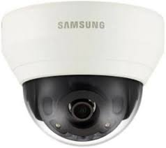

|  |
Samsung QND-7080REspecificações PrincipaisResolução de Vídeo: Oferece uma resolução de 4 MP (2688 x 1520), proporcionando imagens nítidas e detalhadas. Lente Varifocal: Vem com uma lente varifocal de 2.8-12 mm, permitindo ajustes no campo de visão de acordo com a necessidade da aplicação. Visão Noturna: Visão Noturna: Inclui LEDs infravermelhos (IR) integrados que permitem visão noturna com alcance de até 30 metros, garantindo visibilidade em condições de pouca ou nenhuma luz. Classificação para Exteriores: Possui classificação IP66 para resistência à água e poeira, além de classificação IK10 para resistência a impactos, tornando-a adequada para uso em ambientes externos. WDR (Wide Dynamic Range): Possui a tecnologia WDR (120 dB) para lidar com condições de iluminação desafiadoras, equilibrando áreas muito claras e muito escuras no campo de visão. Detecção de Movimento : Oferece recursos avançados de detecção de movimento, permitindo alertas e gravações acionadas por eventos. Áudio Bidirecional: Suporta áudio bidirecional, permitindo comunicação através da câmera. Armazenamento Local:Possui slot para cartão de memória microSD/SDHC/SDXC para armazenamento local de gravações Funções Inteligentes: Inclui funções inteligentes como detecção de manipulação, detecção de desfoque e detecção de entrada/saída de área, melhorando a segurança e a vigilância. Quer Comprar ou saber mais informações? Contacte-nos! |